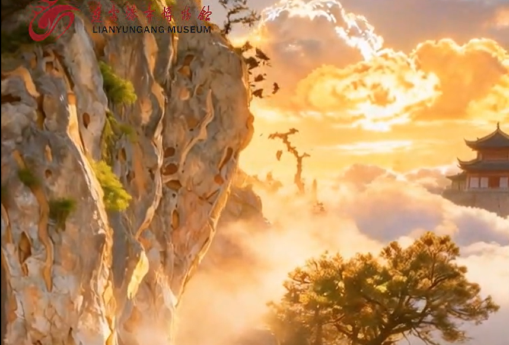
Reviving the Twenty-Four Views of Yuntai
Key frames and transition films converting historical line art into photoreal scenes for Lianyungang Museum.
Design Portfolio
Scroll to turn the page
Or use the navigation above
Right-click any text to view the Chinese original
Professional Capabilities
Proficient in Photoshop, Procreate, CapCut, Jimeng, Ranmeng Valley, and Cursor. Skilled in end-to-end brand design, TVC scriptwriting, finished-film production, folk-culture research, and pixel-game prototyping. I draw by hand, keep a human hold on narrative logic and cultural accuracy, and I know how to fix the symbol distortion and logic slips that AI generation tends to produce.
Creative Philosophy
My work leans toward emotional storytelling and local culture. I believe tools should serve what a person has to say. Off the clock I make clay sculpture, which feeds how I think about form and story. I hold CET-4 and read English comfortably. I want to bring an animator’s sense of narrative to AIGC advertising.
Tools & Software
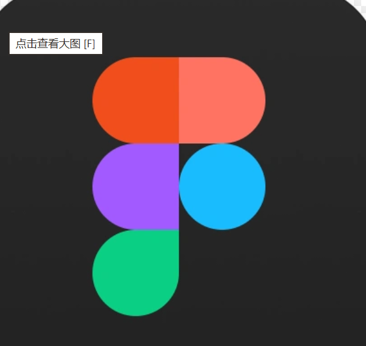
Figma
Key frames and transition films converting historical line art into photoreal scenes for Lianyungang Museum.
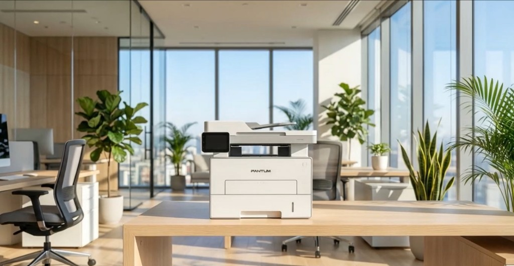
AIGC key frames and a finished film that uses a factory setting to carry the brand’s manufacturing story.
An original character and short animation—“I Want to Clock Out!”—built around a young, workday mood.
Classical-style AIGC animation key frames and a full edit supporting the contest launch.
Running‑Kueh · Play Demo
A personal pixel-game prototype: a Chaoshan red-rice-cake IP, hand-drawn pixel art, and a playable runner that treats a folk symbol as light, interactive play.
Line art to photoreal
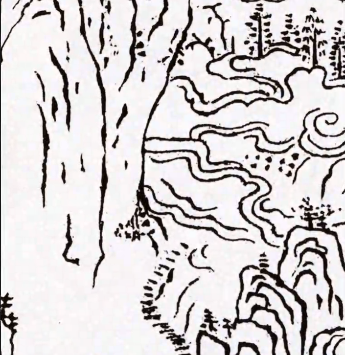
Fig. Main AIGC revival film of the museum’s paintings · Click to play · Lianyungang Museum collaboration
Project: Reviving the Twenty-Four Views of Yuntai
Client: Lianyungang Museum
Role: I produced the key frames that turn historical line art into photoreal scenes, and built the transition films between them.
Challenge & solution: Line-to-photoreal conversion left hard, lifeless edges. I rewrote the photoreal prompts so the images generated as complete scenes, without the stiff outlines.
Outcome: All twenty-four classical views were restored in a style consistent with the historical atmosphere. The key frames and transitions went into the gallery’s multimedia display and improved the visitor experience. The client was pleased with the result.
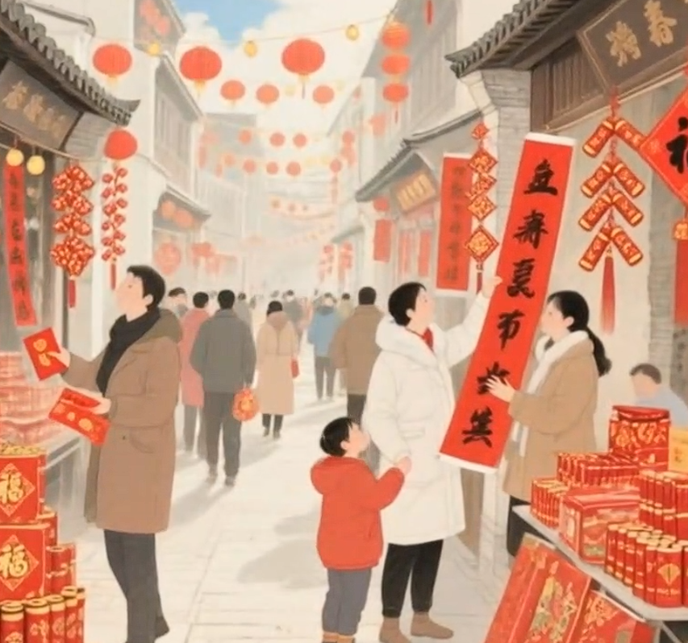
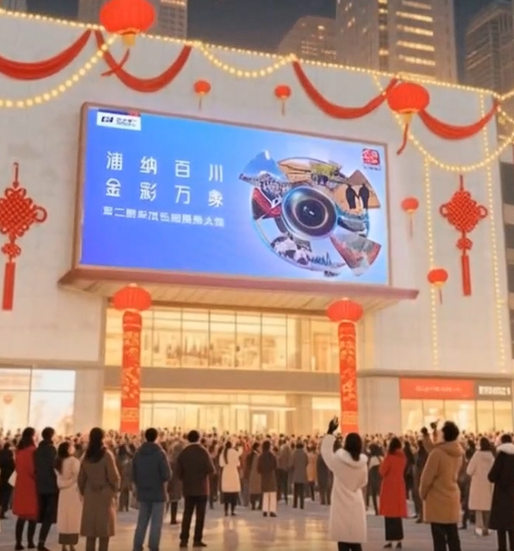
Fig. SPDB Zhuoxin National Photography Contest — “Start of Spring” launch film · Click to play
Project: SPDB Zhuoxin National Photography Contest — Start of Spring Launch
Client: Shanghai Pudong Development Bank (SPDB)
Role: I used AIGC to produce key frames for classical-style animation sequences, completed the animation, and oversaw the full edit.
Challenge & solution: Period scenes often came back with visual artifacts, and cuts between scenes felt abrupt. I tightened the prompts, built scenes from matching reference, and used same-color transitions to smooth the joins.
Outcome: The launch film ran on Douyin and reached 1,700 views, widening exposure for the contest and meeting the brand brief.
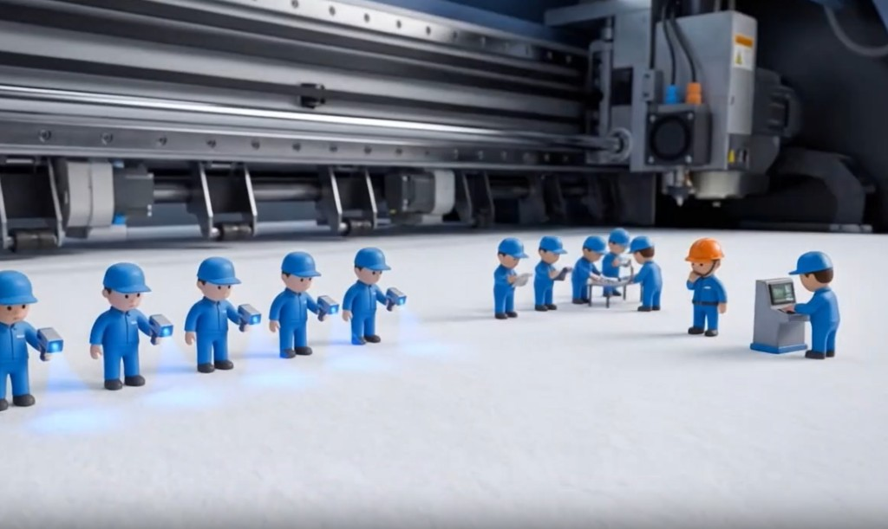
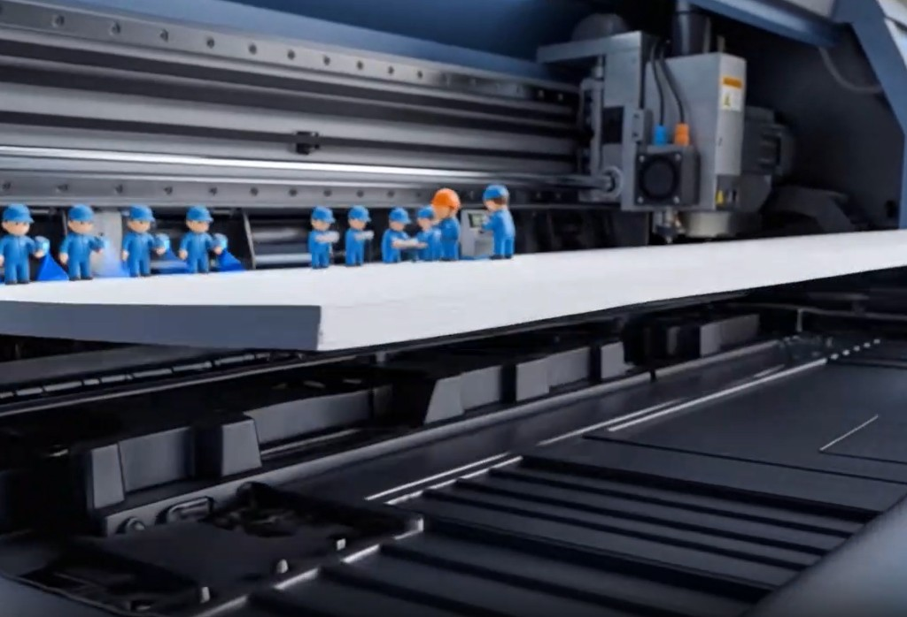
Printer factory studies
Fig. Pantum product film · Click to play · Key frames and boards
Project: Pantum Printer Promotional Film
Client: Pantum
Role: I used AIGC to produce the key frames and the finished promotional film.
Challenge & solution: The printer’s internal parts are dense; generated frames kept distorting. I shifted the concept to a factory setting that still carried the product story, and avoided the detail bugs.
Outcome: A visually consistent short that lays out the manufacturing idea, delivered for online promotion and meeting the intended campaign effect.
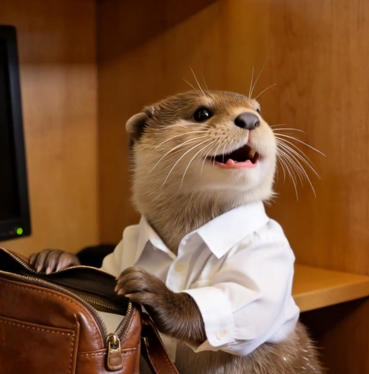
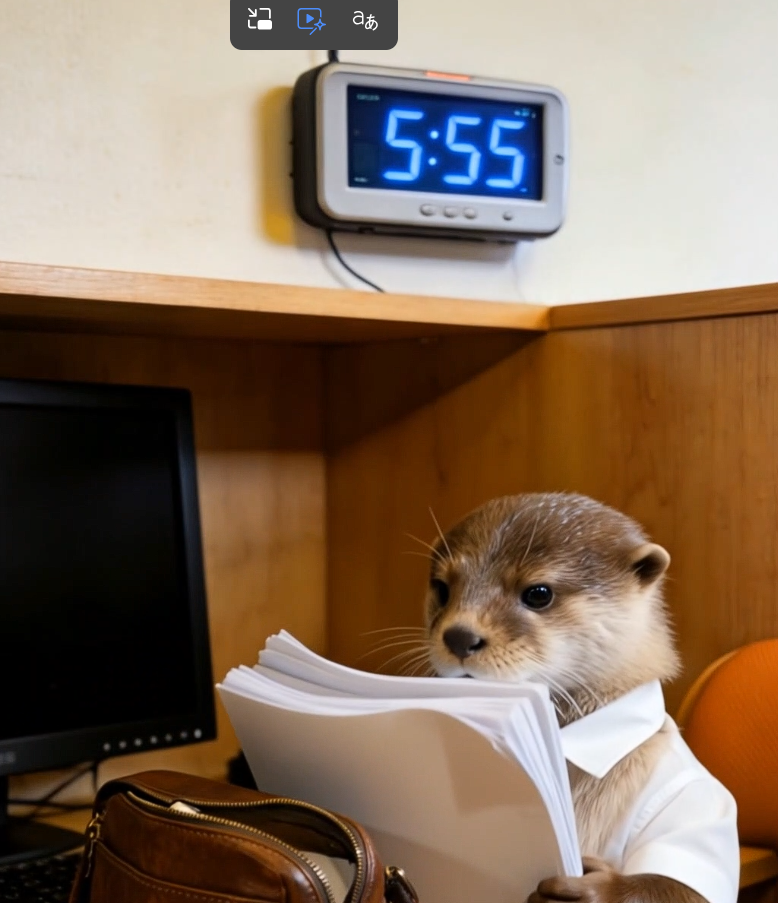
Otter expression studies
Fig. Commercial IP “I Want to Clock Out!” introduction film · Click to play · Character and animation
Project: Commercial IP Design — “I Want to Clock Out!”
Client: Commercial brand
Role: I designed the IP, storyboarded, drew the key frames, and produced the finished short animation.
Challenge & solution: I had to establish the character and land an emotional beat in a very short runtime. I stripped the narrative down, pushed expression and motion, and cut to a rhythm that leaned into the office-worker mood so the piece would stick.
Outcome: A complete IP introduction with a consistent, recognizable look, ready for social and youth-facing brand work, and with room to extend commercially.
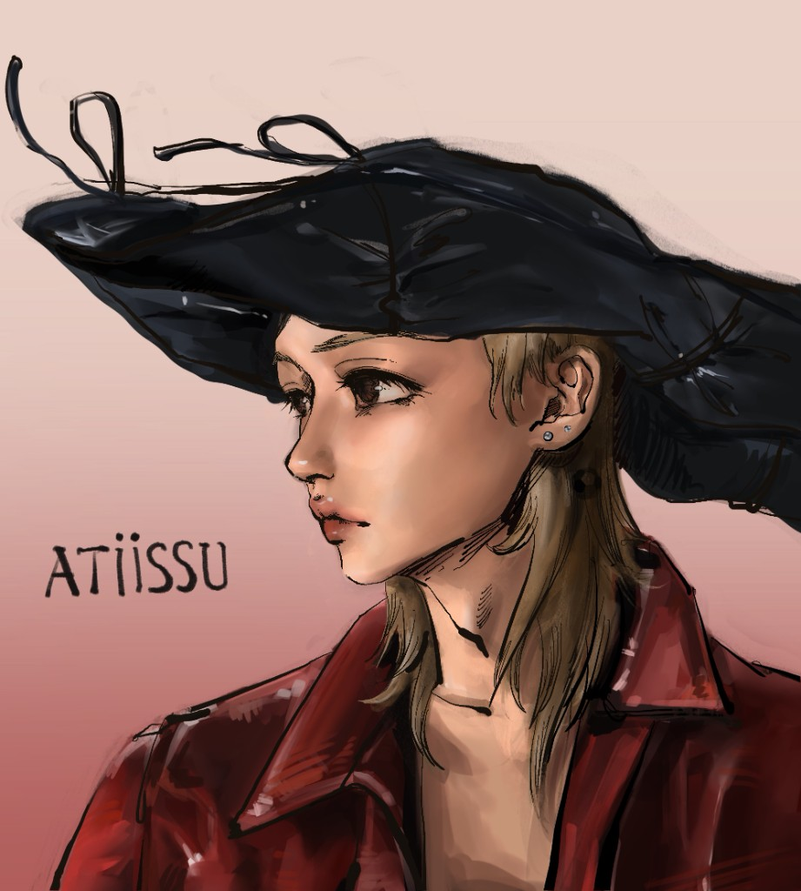
ATIÏSSU
Portrait study — color blocking with line.
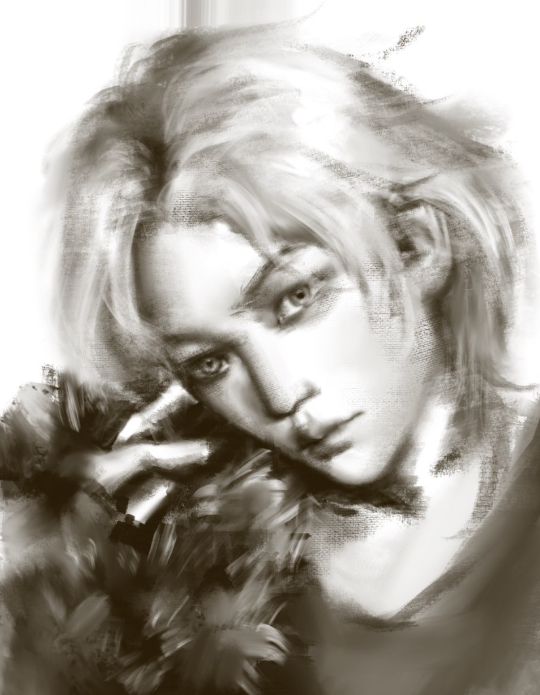
Figure Study
Monochrome value — structure and surface.
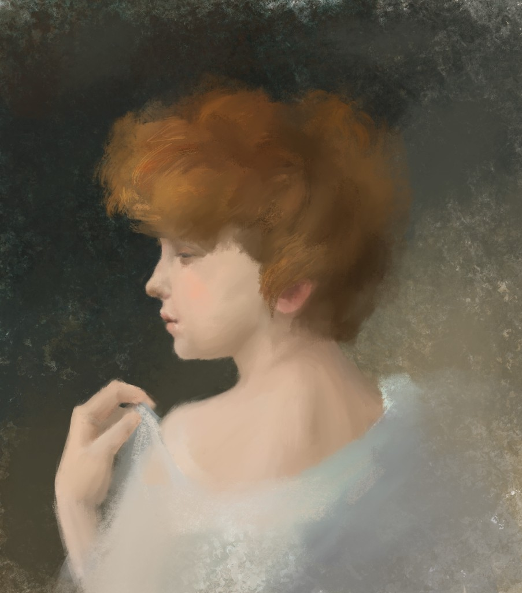
Classical Light
Thick-paint portrait — oil-paint texture in digital.
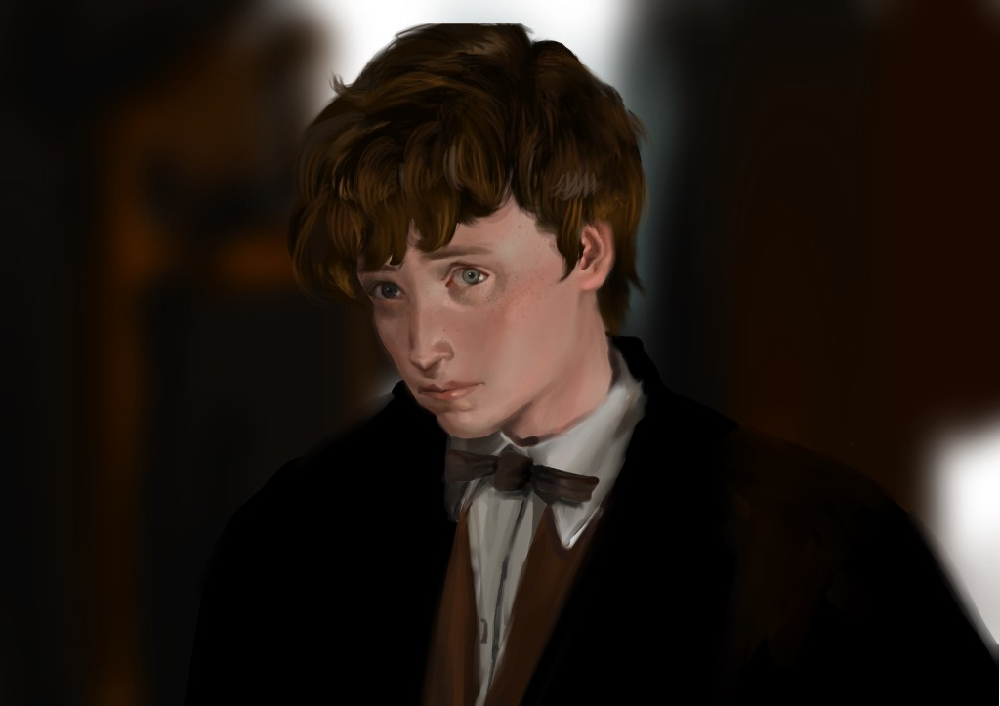
Character Portrait
Film-character study — light and expression.
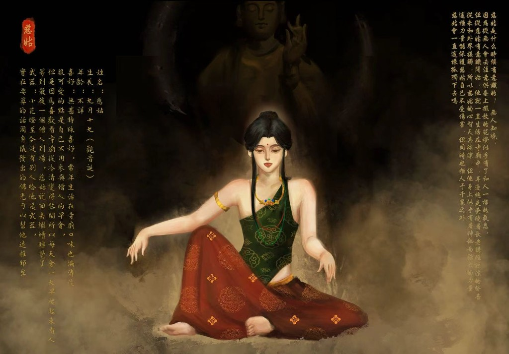
Cigu · full character stand
From the character sheet
Name: Cigu
Birthday: the nineteenth day of the ninth lunar month (Guanyin’s birthday)
Age: unknown
Likes: Nothing in particular. She has lived in the temple for as long as she can remember, and her tastes are as quiet as the place. A small, stubborn habit: she is not required at morning assembly, but she likes watching the temple fill from silence, so she gets up early just to look at people. When the last monk arrives, she goes back to sleep.
Weapon: A small flower lantern. No one has ever given her a weapon. If something has to count, the Buddha-light around her keeps harm at a distance.
When did Cigu first become aware? No one knows. No one pays attention to a lantern on an altar, even one that has begun to breathe like a person. From the moment she woke, she has lived in the temple, with the abbot’s chant always somewhere in the air. She has never left, so her mind is still clear and young—but a strange, considerable power moves with her. It keeps her safe. It also keeps everyone else away. Will she stay this alone?
Character: Cigu—born on the nineteenth of the ninth lunar month (Guanyin’s birthday). Quiet, watchful, often among flowers and old temple rooms, with a little of the unworldly about her.
Color: An emerald bodice and a vermilion skirt, picked out with gold pattern and jewels, so she holds warmth against the dark of the shrine.
Temperament: Still on the surface, finely tuned underneath. She prefers her own company and flowers, and feels at home in temples and old rooms.
Origin: Folk custom and myth, painted in digital thick paint. The file on the left and the story on the right make one complete IP sheet.
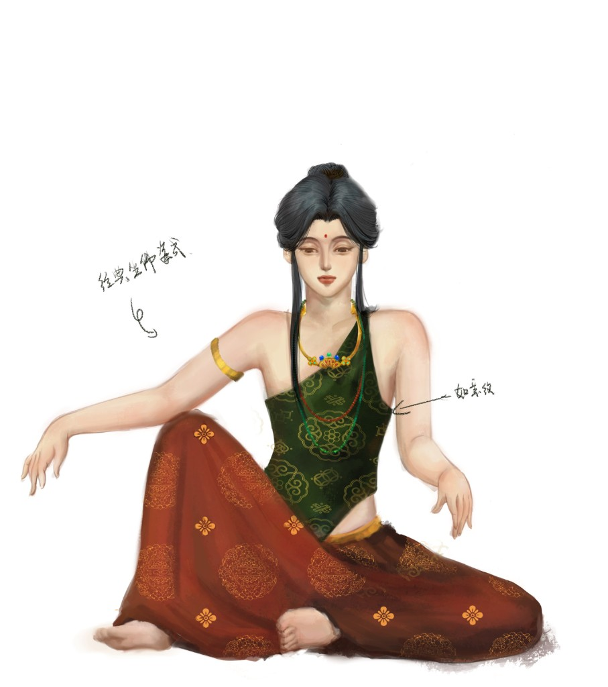
Costume notes
Thank you for reading this portfolio. I believe animation and visual design are not only a matter of craft, but of feeling and culture. At the meeting point of Chinese aesthetics and AIGC, I want the work to speak—images that hold both beauty and a story.
If you are looking for an animation or visual designer who is stubborn about details and genuinely drawn to East Asian aesthetics, I would like to hear from you. I hope we can talk in person about what the next project might become.
2026 Jin Qiuzhu · Animation Design